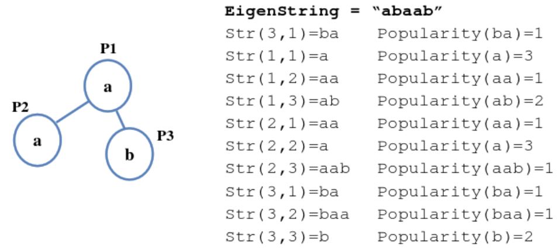

Louis.PS 是一名精明的珠宝商，他出售的项链构造独特，很大程度上是因为他的制作方法与众不同。每次 Louis.PS 到达某个国家后，他会选择一条路径去遍历该国的城市。在到达一个城市后，他会使用在这个城市流行的材料制作一颗珠子，并按照城市被访问的顺序将珠子串联做成项链，为了使制作出来的项链不会因为城市之间的竞争而影响销量，路径中同一个城市不会重复出现（因为如果项链中 A 城市的材料比 B 城市的材料使用的多，则项链在 B 城市的宣传可能会受到影响）。经过多年对消费者的调查， Louis.PS 已经掌握了判断一条项链吸引消费者程度的方法，具体来说， Louis.PS 经过调查得出了受消费者欢迎的项链的特征，并基于此制作了一个长项链（Louis.PS 称之为特征项链）。对于一条待售的项链，这条项链在特征项链里出现的次数越多，这条项链就越受消费者欢迎。
考虑到现实情况的复杂性，我们对条件做出适当的简化。对于每个国家，在某些城市间存在道路直接相连，对于两个不同的城市，有且仅有一条路径连接这两个城市（即国家是连通的，且不存在一个环）。对于每个城市，我们用一个小写字母来表示在这个城市流行的材料类型。这样，我们就可以用一个仅包含小写字母的字符串来表示一条项链， 我们将特征项链所对应的字符串称作特征字符串，设为EigenString[1...M]，$M$ 为特征项链的长度。对于一条项链，假设其对应字符串为P[1...L]，$L$ 为这条项链的长度。如果存在一个正整数 $K$, 使EigenString[K...K+L−1]=P[1..L]，称这条项链在特征项链中出现了一次。 满足上述条件的正整数 $K$ 的个数即为这条项链在特征项链的出现次数，记为 $Popularity(P)$。
Louis.PS 使用数学中的期望概念来评价一个国家是否适合珠宝的采集,对于一个包含 $N$ 个城市的国家，令$Str_{u,v}$表示沿着从 $u$ 开始，至 $v$ 结束的路径所得到的项链的对应字符串。 ($Str_{u,v}$ 与 $Str_{v,u}$ 表示的串一般不相同），则 $Expectation=\sum_{u,v}Popularity(Str_{u,v})/N^2$
对于如下的例子（图中实线表示两端点的国家有直接道路相连）：
$N=3$，所流行的材料类型分别为 $a,a,b$。

$Expectation=\frac{3+1+2+1+3+1+1+1+2}{9}=\frac{5}{3}$
对于一个国家， Louis.PS 想知道其 $Expectation$ 的值，但苦于计算期望的工作量太大。作为珠宝店的学徒， 你当然不愿放过难得在老板面前展示自己的机会。
 Comet OJ
Comet OJ